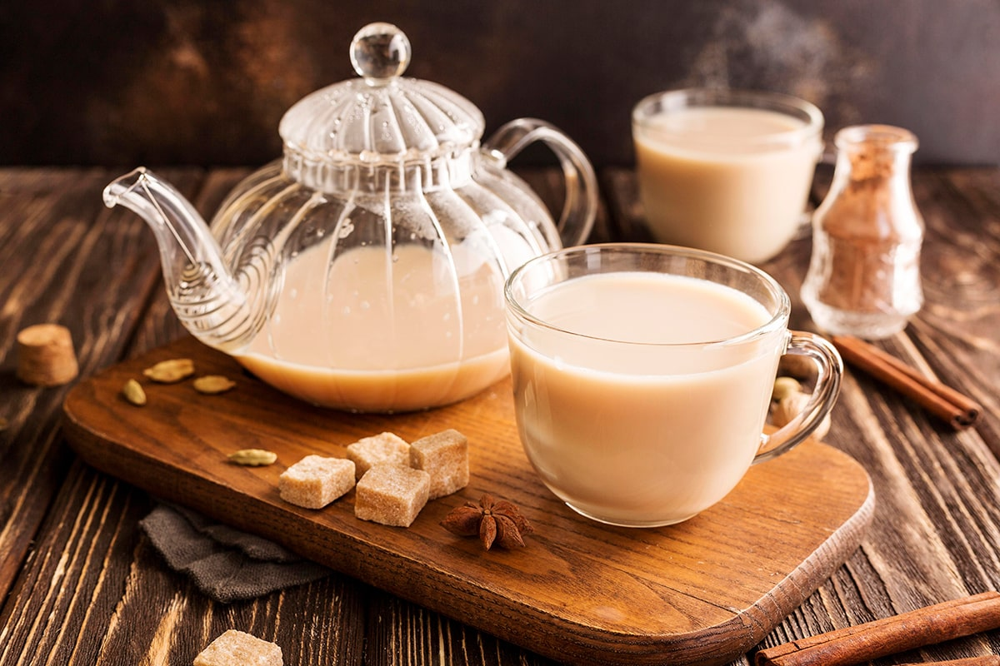

our recipies
Food is the basic human need to stay alive. Moreover, it is the need of every living organism. Therefore it is important that we should not waste food. Our world consists of different types of cultures. These cultures have varieties of dishes of food in them.Thus, all the dishes have different taste. Furthermore, our nature provides us a variety of food. From fruits to vegetables, from Dairy food to seafood everything is available. Different countries have their own specialty of dishes. Therefore some of them are below:

10 Most Popular African Coffee Brands
African coffee culture has recently been brewing up a storm. A heightened growth in strong, domestic consumer markets have been seen, as well as an increase in café culture within Africa’s urban areas. With about half a trillion hot cups consumed per year, coffee is the world’s second most traded commodity- following oil. As the third most consumed beverage after water and tea, coffee has also been able to maintain its spot as one of the world’s top commodities. Due to its popularity, coffee beans are in high demand everywhere, and coffee brands are continuously striving to surpass their mark in the competitive market.

Fruits, vegetables, and health
Fruit and vegetables (F&V) have been a cornerstone of healthy dietary recommendations; the 2015–2020 U.S. Dietary Guidelines for Americans recommend that F&V constitute one-half of the plate at each meal. F&V include a diverse collection of plant foods that vary in their energy, nutrient, and dietary bioactive contents. F&V have potential health-promoting effects beyond providing basic nutrition needs in humans, including their role in reducing inflammation and their potential preventive effects on various chronic disease states leading to decreases in years lost due to premature mortality and years lived with disability/morbidity. Current global intakes of F&V are well below recommendations. Given the importance of F&V for health, public policies that promote dietary interventions to help increase F&V intake are warranted.

Amazing pizza. Family friendly and super cool design.
Some of the best pizza around hands down. Really fresh and well made. Not ever over or under cooked. They’ve somehow managed to make it the perfect middle. I highly recommend them here! The quintessential New York style slice, still cooked in one of the last coal-fired ovens in the city! This pizza may sound underwhelming on the outside, but don’t let the simplicity foul you. The genius here is in the balance and execution of the few ingredients involved. Don’t be tempted to stray for the regular pie as this is where you get the full experience. Go and enjoy this American classic!
toutube
facebook
linkedin